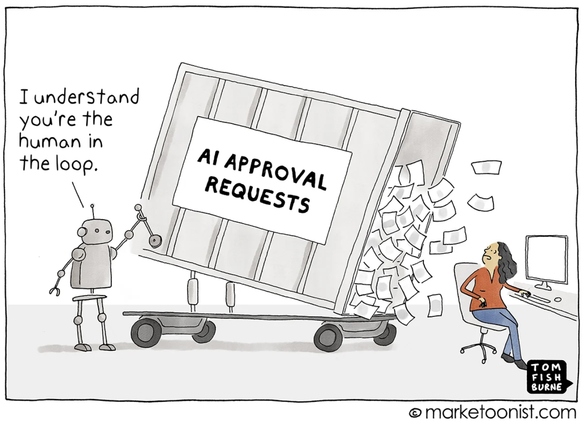
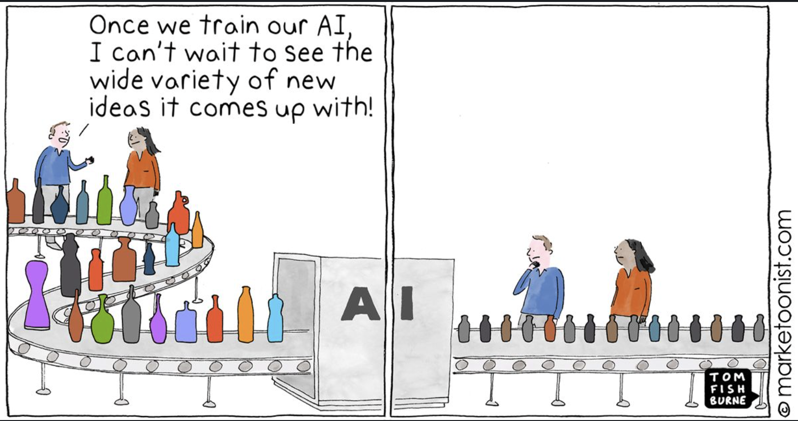
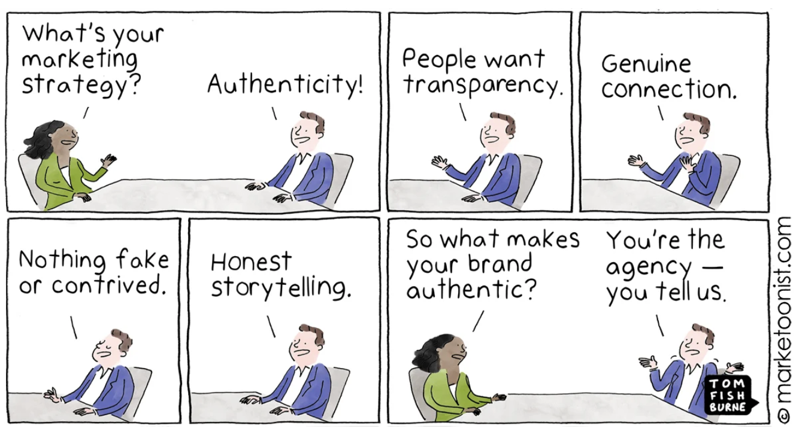
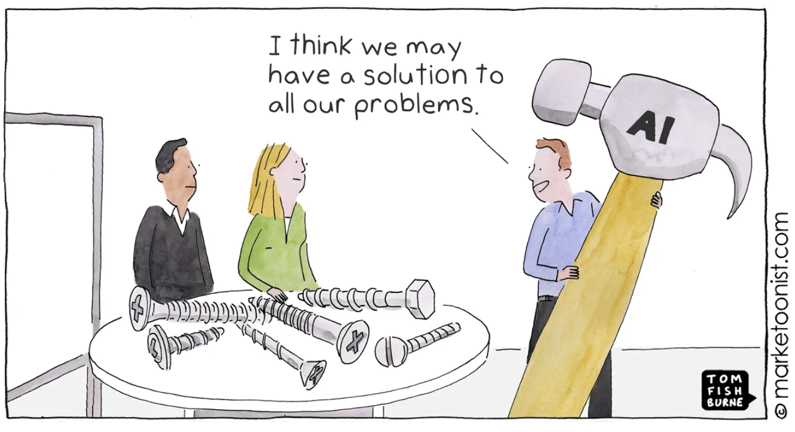

The helpful, no-pressure friend at the bar. Why “just be useful” is the right brief and the wrong stopping point.
Pick the wedding back up where §7 left it. The storyteller earned your laugh, earned your interest, and an hour later the two of you have ended up at the bar again. The exchange that closes the gap is the one that opens this section: So what do you actually do?
She has roughly two options, and every middle-of-funnel piece of content a company will ever produce is shaped by which one she picks.
Option one: “I’m in management consulting. We help mid-sized companies optimize their operations. Happy to set up a call if that’s useful.” You nod. You change the subject to the wedding cake. You will not remember a word of that sentence on Monday.
Option two: “Most of our clients are third-generation family manufacturers, and the interesting problem is that the founder’s grandkids inherit the company but not the relationships. So we spend the first six months mostly just sitting in meetings the family didn’t know they needed to have. The plant floor stuff is usually the easy part.” You ask a follow-up question. She gives you a real answer. By the end of the wedding you have her email.
This section is about that gap.
The middle of the funnel is the stage where the buyer already knows your category exists and has named the problem out loud. They are not asking what is this? any more. They are asking which one, and why that one and not the other one? Almost everyone who matters at this stage is doing the research without you in the room.
That last sentence is the one to dwell on. G2’s 2024 Buyer Behavior Report, surveying close to 2,000 B2B decision-makers, found that roughly 69% of them only loop a salesperson in after the decision has effectively been made. That number is what the entire content marketing industry is built around, and it is also what makes the middle of the funnel the most under-respected stage in the whole journey. The buyer is forming a preference that the salesperson will later inherit, and the buyer is doing it by reading whatever shows up when they Google the problem — or, increasingly, whatever surfaces when they ask Claude or ChatGPT to compare their options.
HubSpot’s working framing for the middle of the funnel is one we will keep, because it is genuinely useful: the helpful, no-pressure friend. The brand at this stage is not closing, not pitching, not asking for the meeting. It is acting like the friend you have at a barbecue who happens to know about the thing you are buying and who will tell you the truth about it, including the parts that are not flattering to her own employer.
Three tests apply:
The Reinartz and Saffert finding from §1 — that ads requiring the viewer to work a little outperform ads that hand everything over flat — carries over here in modified form. The middle-of-funnel reader is doing the work of evaluation already. The content’s job is to give them something worth chewing on, not to feed them the conclusion.
If you read a dozen MoFU content marketing pieces in a row — and someone, somewhere, should give an award to the student who actually does this — you will encounter the same list almost verbatim every time. The HubSpot version, written by Jenny Bergen Clark and updated in March 2026, is representative. The piece recommends a familiar quartet for the middle of the funnel: long-form guides that go past the surface level, customer case studies, social posts that go deeper than the awareness layer, and head-to-head comparison content. Almost every other content marketing article published in 2025 and 2026 lists the same four or five categories with slight rewording.
The taxonomy is fine. It is fine the way knowing the food groups is fine — necessary but not the same thing as cooking. The textbook playbook is roughly this:
None of this advice is wrong. It is, however, the floor and not the ceiling, and the field has spent the last decade pretending it was both. The literature on MoFU creativity is notably thin compared with the literature on awareness creativity, where there are decades of work on humor, story structure, distinctive brand assets, and emotional appeals. When you ask the content marketing field what makes one comparison guide more creative than another, the field mostly answers by changing the subject — usually to SEO, or to the AI tool that wrote the draft, or to the workflow that turned a webinar into eight LinkedIn carousels.
Read across the field long enough and a diagnosis starts to surface. Somewhere between 2010 and 2015, when “advertising” largely renamed itself “content marketing,” the SEO and lead-gen functions inherited the steering wheel and the creative-craft tradition the textbook still teaches got left in the previous role. The middle of the funnel is where that loss shows up most plainly, because the middle is the writing-heaviest stage, and writing is the part the discipline gave up on as a craft first.
Here is the question to sit with. If every brand in your category is now: (a) running the same keyword research against the same Ahrefs or Semrush data, (b) reading the same Reddit threads and G2 reviews to find the same buyer questions, (c) using the same large language models with broadly similar prompts to draft the same in-depth guides and comparison posts, and (d) wrapping the output in their own brand colors — then what, exactly, is the creative input that makes one brand’s middle-of-funnel content different from another’s?
The cartoonist Tom Fishburne, who has been chronicling this in his Marketoonist series for years, calls the current generation of AI writing tools conformity machines — powerful in part because they regress toward the median. That is not a bug. It is what a model trained to predict the most likely next token is supposed to do. The trouble is that everyone in your category now has access to the same machine, and the machine is being asked roughly the same question, and the machine’s answers are converging.
The numbers underneath this are not subtle. As of early 2026, surveys put the share of marketers using AI in content creation at somewhere around 89–94%, with most teams using it to draft, summarize, and repurpose. A 2026 Hookline study reports that 82.1% of Americans say they can identify AI-written content. Sixty percent of marketers who use generative AI tell researchers they are worried it will harm their brand reputation. And the discourse has moved from will AI replace writers? to the much more uncomfortable will AI make every brand sound like every other brand?




This is not, to be clear, an argument against using AI to make middle-of-funnel content. It is an argument that the line which used to separate a great content team from a mediocre one — can you draft a fluent, well-organized comparison guide? — is now a line that any team with a five-dollar-a-month subscription can sit on. The competitive advantage has moved. The question is where.
If “be helpful” is the brief, and if “be helpful” is what everyone is now doing with the same tools, then the creative work at the middle of the funnel is whatever lets your version of helpful be the version that gets remembered, shared, and cited. Five moves do most of the work. The first four are mostly strategic; the last is the one most clearly tied to creative craft in the textbook sense, and it is also the one most often dropped.
The HubSpot piece links to an Asana case study about Zoom that reports the company saved 667 workdays annually with more than 90% program adoption. Pull the numbers out and the prose collapses into a story you could have told about anyone. A model can generate the verbs and the transitions. It cannot generate the 667 from outside your own customer data. The cheapest source of distinctiveness in MoFU content is a number only your company is positioned to know — a benchmark from your own customers, a survey only you fielded, a finding only your own dataset would produce. Almost every brand has these and almost no brand mines them.
The instinct in middle-of-funnel content is to say only the things that flatter the product. The creative move is to say something that doesn’t. The comparison guide that admits a competitor is genuinely better on one dimension — cheaper, faster to set up, more suitable for very small teams — is the comparison guide a sophisticated buyer trusts the rest of, because the writer has shown they are not in pure-promotion mode. Heinz Marketing’s 2026 content trends piece makes the point bluntly: content that never takes a risk worth being wrong about is content that does not get believed. The willingness to lose one deal by being honest is what earns the next ten.
When the prose is interchangeable, the artifact stops being. Moz’s SEO Audit Checklist is not an article; it is a system somebody can run. Notion’s Marketing Project Brief is not a blog post; it is a template you load into the product and start using on Monday. An ROI calculator that asks for the reader’s actual numbers and produces a result personalized to their situation is doing something that a thousand AI-generated “5 ways to calculate ROI” posts cannot. Format invention is expensive in a way that prose generation no longer is, which is precisely why it now signals seriousness.
Large language models are exceptional at summarizing what the internet already says about a topic. They are categorically less good at anticipating the second-order question that has not been searched yet because nobody has phrased it that way. The most useful middle-of-funnel content in any category is usually the piece that names a problem the buyer has not yet thought to name — the implementation pitfall that only shows up in the third month, the integration gotcha nobody talks about, the political question inside the buyer’s own organization that the procurement framing hides. Naming these things requires having actually been in the room, which is the part the conformity machines cannot manufacture.
The default voice of MoFU content is neutral, mildly authoritative, and vaguely professional — the voice a model produces when asked for a comparison guide and told to sound “helpful.” The creative move is to write in a voice that cannot be cheap-prompted into existence.
The voice is the differentiation in each case, and it works precisely because it cannot be lifted by a competitor with the same prompt — it has to be hired for, defended against the people who want to tone it down, and committed to across years. This is the move most clearly continuous with the creative tradition in earlier sections of this unit, and it is the move current content marketing literature mentions least.
Perhaps, to a point. But the way most current tools handle “voice” is to select between a small set of prefabricated patterns — professional, casual, witty, technical — and then sprinkle in a few signature words the brand likes. Magnificent rather than gorgeous. Tinker rather than experiment. Considered rather than thoughtful. The result is a competent imitation of voice-as-vocabulary, which is the surface of the thing. Real voice is the layer underneath: what the brand will not say, the joke it will not make, the sentence shape it returns to, the assumptions it makes about who the reader is. That part has to be authored, and the brands listed above did the authoring before the model was asked to mimic it.
1+1=3 The five moves share a structure: differentiation through things competitors cannot easily replicate, rather than more polished prose about things everyone already has. Two trade in information competitors do not have (original data, anticipating questions). Two trade in craft competitors will not commit to (format invention, distinctive voice). One trades in restraint competitors are too anxious to allow themselves (honest trade-offs). The common thread: each one costs something — money, time, or political capital inside the brand — and the cost is the moat.
The wrinkle that has changed this conversation between 2024 and 2026 has a clumsy acronym: AEO, for Answer Engine Optimization. AEO is what content marketing started calling itself once a meaningful share of buyers stopped clicking through Google’s ten blue links and started reading the answer the AI assistant produced at the top of the page — or asking ChatGPT, Claude, Perplexity, or Gemini in the first place. Industry coverage of recent EMARKETER and Elon University data puts the share of U.S. adults using one of these tools at roughly half, with B2B buyer adoption higher. The implication: a sizable fraction of the middle-of-funnel research that used to involve reading three articles now involves reading one synthesized answer that may or may not name your brand.
Here is the part worth getting your head around. When an AI answer engine synthesizes a response to which CRM is best for a fifteen-person services firm?, it is not running a popularity contest among well-optimized blog posts. It is selecting sources whose content gives the model something specific to point to — a number, a named example, a clearly-stated position. The B2B AEO and GEO literature converges on the same point: content with primary data, clear structure, and a stable identity across surfaces gets cited at higher rates than content that mostly summarizes what is already in the model’s training set. Generic synthesis loses, in part because the model is already doing the synthesis itself and does not need a source for it.
The implication is almost too clean. The same five moves that make MoFU content creatively distinctive are the moves that make it more likely to be cited by the AI engines that now mediate a growing share of the buyer’s research. Original data, honest trade-offs, format invention, anticipating questions, and a voice no competitor can fake are not only the cure for the sameness problem inside your brand. They are the cure for the discoverability problem outside it.
Strong creative upstream doesn’t only buy mental availability and AEO citations. It also shifts the kind of search the buyer runs when they finally go look. A buyer who has met your brand at the wedding is more likely to type Surreal cereal review than healthy breakfast cereal, Liquid Death pricing than premium canned water. That shift from unbranded to branded search carries real economics. Branded queries are cheaper in paid (you are essentially bidding against yourself), they convert at much higher rates because the intent is already focused, and they are easier to win organically. The cost is volume — only people who already know the brand search for it. Unbranded queries are where the larger and more contested audience lives.
The budget implication is the one most often missed when leadership asks why creative costs so much. A brand that earns enough awareness to drive branded search will, over time, spend less on paid search to compete for the unbranded version of the same query. The line item shrinks two stages away from where the creative work was done, which is why almost nobody credits the creative work for it.
The piece of the field still trying to win at MoFU through volume — more posts, more keyword coverage, more AI-assisted drafts — is fighting the last war. The piece of the field investing in primary research, in actual points of view, in formats that take work to build, and in a voice that cannot be cheap-prompted is positioning itself for the world the buyer is actually living in.
The AI thread running underneath this whole section gets picked up in full in §10, which steps back from the funnel and asks the larger question: what is AI actually doing to creative work right now, and what is it not doing.
Back to the bar one more time. The storyteller answered the question well. You asked a follow-up; she gave a real answer; you asked another. Twenty minutes have gone by. You are now the one closer to bringing the subject around to whether she takes new clients in the spring, because she has earned the right to be asked.
That moment is the handoff from the middle of the funnel to the bottom. The tone changes again. The pace changes. The job changes. The helpful, no-pressure friend has done her work; what comes next is closer to the consultant’s proposal than to the friend’s advice. That is where §9 picks up.
Middle of the Funnel (MoFU) — the consideration stage of the customer journey, where the prospect has named the problem and is evaluating options. The creative job: be the helpful, no-pressure friend who earns the prospect’s trust before there is any ask.
Helpful, no-pressure friend — HubSpot’s working framing for the MoFU brief, popularized by Jenny Bergen Clark. The brand acts as a knowledgeable acquaintance giving honest, specific advice the reader could act on without ever buying.
Conformity machine — Tom Fishburne’s shorthand (via his Marketoonist series) for the tendency of large language model writing tools to regress toward the median of the training data — producing fluent, competent, and broadly indistinguishable output across users with similar prompts.
Answer Engine Optimization (AEO) — the 2025–2026 evolution of SEO, focused on getting cited by AI answer engines (ChatGPT, Claude, Perplexity, Gemini, Google AI Overviews) rather than on ranking inside the ten blue links. AEO rewards primary data, clear structure, and a distinctive point of view — the same things that make MoFU content creatively differentiated.
Generative Engine Optimization (GEO) — closely related to AEO and used roughly interchangeably in current trade press. EMARKETER’s analyst Kelsey Voss has drawn the working distinction this way: where SEO chases page rankings that earn clicks, GEO chases inclusion in the synthesized answer itself.
Format invention — a creative move at MoFU in which the differentiation lives in the artifact rather than the prose: an ROI calculator, a downloadable audit checklist, a template the reader loads into a product. The format does work the article cannot.
Branded vs. unbranded search — a branded search includes the brand name in the query (Surreal cereal review); an unbranded search asks about the category without naming a brand (healthy breakfast cereal). Branded queries are cheaper in paid, higher-converting, and easier to win organically, but limited in volume to the audience that already knows the brand. Strong awareness creative shifts the mix toward branded, which is one of the under-credited ways creative spend pays for itself downstream.
Sources cited in this piece, in APA style. The HubSpot Bergen Clark piece anchors the “helpful, no-pressure friend” framing this section keeps and extends; the rest are the contemporary 2025–2026 trade and analyst literature on AI in content, AEO and GEO, and the underlying creative-effectiveness research.
Bergen Clark, J. (2026, March 17). Level up your content marketing funnel — here’s how I make the right content for each stage. HubSpot Marketing Blog. https://blog.hubspot.com/marketing/content-for-every-funnel-stage
HubSpot. (2026). Marketing funnel — definition, FAQs & how HubSpot helps. HubSpot. https://www.hubspot.com/glossary/marketing-funnel
G2. (2024). 2024 buyer behavior report. G2 Research. (Cited via Bergen Clark, 2026 — finding that approximately 69% of B2B buyers complete their decision before involving a salesperson.) https://research.g2.com/2024-buyer-behavior-report
Fishburne, T. (2023, February). AI-generated sameness [Marketing cartoon and essay]. Marketoonist. https://marketoonist.com/2023/02/ai-generated-sameness.html
Heinz Marketing. (2026, January 26). Content marketing trends 2026: How to win when AI takes over. Heinz Marketing. https://www.heinzmarketing.com/blog/content-marketing-trends-2026-how-to-win-when-ai-takes-over/
EMARKETER. (2026, April). FAQ on GEO and AEO: Where AI search and SEO overlap in 2026. EMARKETER. https://www.emarketer.com/content/faq-on-geo-aeo--where-ai-search-seo-overlap-2026
HubSpot. (2026, May). Answer engine optimization trends in 2026: How AEO is transforming the landscape. HubSpot Marketing Blog. https://blog.hubspot.com/marketing/answer-engine-optimization-trends
Reinartz, W., & Saffert, P. (2013, June). Creativity in advertising: When it works and when it doesn’t. Harvard Business Review, 91(6), 106–111. (Carried forward from §1.) https://hbr.org/2013/06/creativity-in-advertising-when-it-works-and-when-it-doesnt
Belch, G. E., & Belch, M. A. (2023). Advertising and promotion: An integrated marketing communications perspective (13th ed., Chapter 8). McGraw Hill.